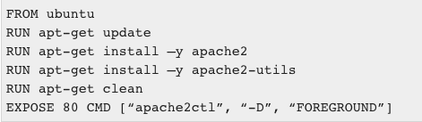

Tutorial
Step 1 − The first step is to build our Docker File. Let’s use vim and create a Docker File with the following information.
The following points need to be noted about the above statements
- We are first creating our image to be from the Ubuntu base image.
- Next, we are going to use the RUN command to update all the packages on the Ubuntu system.
- Next, we use the RUN command to install apache2 on our image.
- Next, we use the RUN command to install the necessary utility apache2 packages on our image.
- Next, we use the RUN command to clean any unnecessary files from the system.
-The EXPOSE command is used to expose port 80 of Apache in the container to the Docker host.
- Finally, the CMD command is used to run apache2 in the background.

Now that the file details have been entered, just save the file.
Step 2 − Run the Docker build command to build the Docker file. It can be done using the following command −

We are tagging our image as mywebserver. Once the image is built, you will get a successful message that the file has been built.

Step 3 − Now that the web server file has been built, it’s now time to create a container from the image. We can do this with the Docker run command.

The following points need to be noted about the above command
- The port number exposed by the container is 80. Hence with the –p command, we are mapping the same port number
to the 80 port number on our localhost.
- The –d option is used to run the container in detached mode. This is so that the container can run in the
background.
If you go to port 80 of the Docker host in your web browser, you will now see that Apache is up and running.